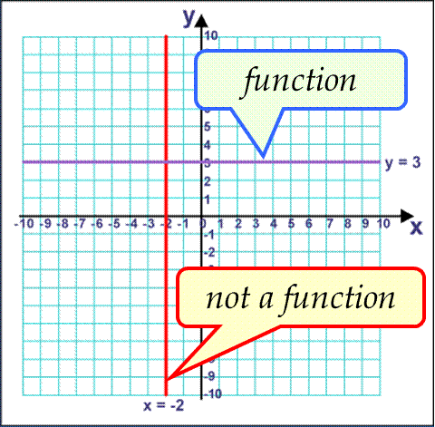

Linear Relations & Functions
Linear Equations
$Ax+By+C=0$
$Ax+By+C=0$
Ex) Graph $4x-3y=12$
$\table \text"Solve for "y=mx+b; 4x-3y=12; -3y=-4x+12; y={4}/{3}x-4; \text"(m=slope) & (b=y-intercept)"$
$\table \text"Solve for "y=mx+b; 4x-3y=12; -3y=-4x+12; y={4}/{3}x-4; \text"(m=slope) & (b=y-intercept)"$
Not all linear equations are functions
Linear Functions
$f(x)=mx+b$, where $m,b ∈ R$
$f(x)=mx+b$, where $m,b ∈ R$
Zeros of a Function - values of $x$ for which $f(x)=0$
Ex) $f(x)=1/2x-2$
$\table 0=1/2x-2; 2=1/2x; 4=x$
Ex) $f(x)=1/2x-2$
$\table 0=1/2x-2; 2=1/2x; 4=x$
Homework